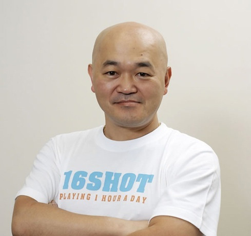

About SIX502
SIX502 Token is a project founded by a team of legends in the Japanese video game industry.
The team members have worked on the legendary Momotaro Dentetsu, the worldwide hit "NINJAGAIDEN", and the hit "Dead or Alive", which has sold 10 million copies worldwide.
The team consists of the leaders of legendary content production teams.In response to the current low quality of blockchain games, the game industry legends who have led the world's game scene are now working together to create a new type of blockchain game.
The game industry legends who have been leading the global game scene will propose <real games> to the blockchain game industry.
Our Team

Chief producer
Naoyuki Tsuji
辻尚之
Certified tax accountant. Former Director and General Manager of Development Division of Hudson Soft. President of Hudson Soft in the U.S. and Europe.CFO of Hudson Entertainment in the U.S. and later CFO of Valhalla Game Studios.His representative works include "Momotaro Dentetsu" series.
-
Hudson Management Division established
-
Creation of Hudson Game Development Division
-
General Manager of Hokkaido Railway Culture Council Operation Division
-
Established TurboGraphics CD business in the U.S.
-
Head of Hudson Listing
-
Established Hudson Entertainment, Inc. in the U.S.A.
-
Developed Momotaro Dentetsu series


General Editorship
Tomonobu Itagaki
板垣伴信
In 1996, he began working on the "Dead or Alive" series and led "Team NINJA," an in-house team developing the "Dead or Alive" and "NINJA GAIDEN" series, as general manager.As of 2016, the "Dead or Alive" series has sold 9.7 million units worldwide.After that, he established the development team "Tokyo Viking" with more than 44 members, including his subordinates from Team NINJA and new members such as those who had experience developing "Virtua Fighter 5" (SEGA).The development team "Tokyo Viking" was established.In August 2017, he became a senior advisor for the smartphone app "Battleship Empire".In August 2017, he stepped down as President and Chief Technology Officer of Valhalla Game Studios andwas announced to assume the position of Chief Advisor.In November 2017, he was appointed as "Metal Advisor" of Softgear Inc.In January 2021, he founded Itagaki Games.
-
Dead or Alive Series
-
NINJA GAIDEN
-
NINJA GAIDEN BLACK
-
NINJA GAIDEN Dragon Sword
-
NINJA GAIDEN 2
-
Devil's Third

Producer
Takahashi Meijin
高橋名人
(real name: Toshiyuki Takahashi) is a Japanese gamer and video game industry official. His blood type is O.He dominated the NES heyday as a NES Meijin (Famicon Master) for Hudson, and also worked as a singer.He was a pioneer of professional gamers in Japan and also served as the president of the e-sports promotion organization.
-
16 rapid shot
SIX502
token sale plan
SIX502 Token tokenomics
The budget collected will be allocated and used as follows
Seed
Funds raised in SELL 1 will be used for the development of the alpha version.
Strategic
Funds raised through sell 2 will be used for the sales channel expansion strategy and beta version.
Public
SELL 3 will accept applications from the general public.
Liquidity
Funds raised by SELL 4 will be used to provide liquidity.The listing on SIX will be later.

VC Rounds how to buy Tokens
Prepare your wallet for the BNB Chain (BSC).
Make sure you have the correct contract address.
If you make a mistake, you may lose your assets.
Transfer any USDT to the above token address.
[Deposit Address]
0x1A6eDdC88D4cB5128C32443FAFFE59037479E516
[Token Price]
0.02 USDT